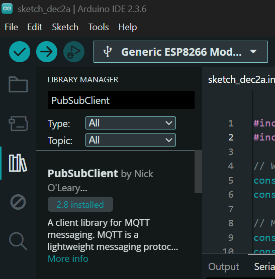
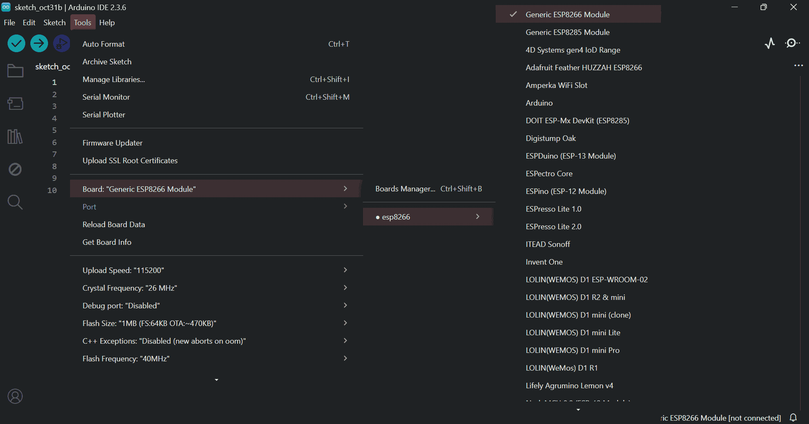
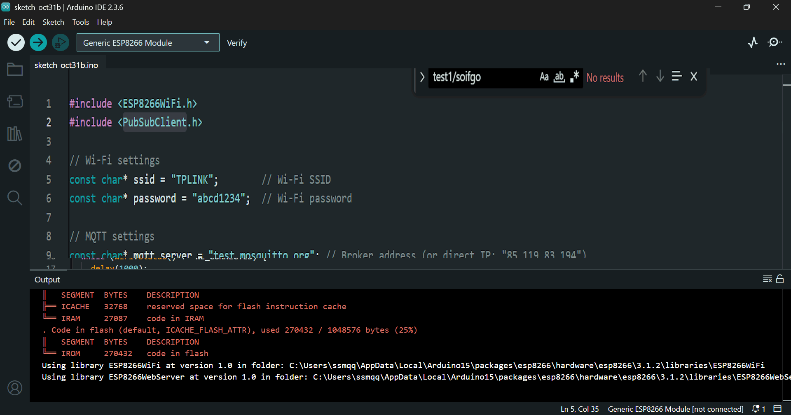
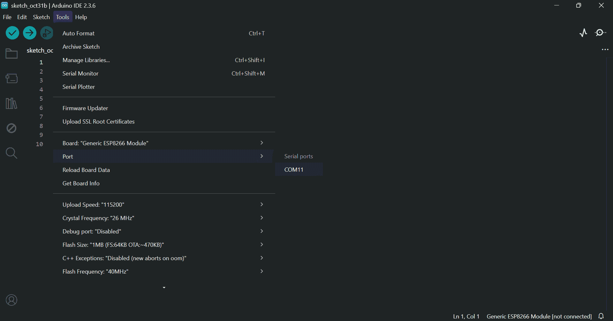
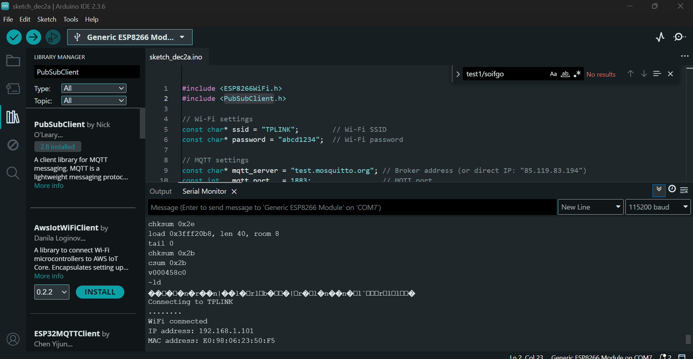
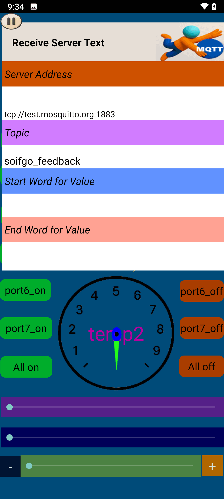
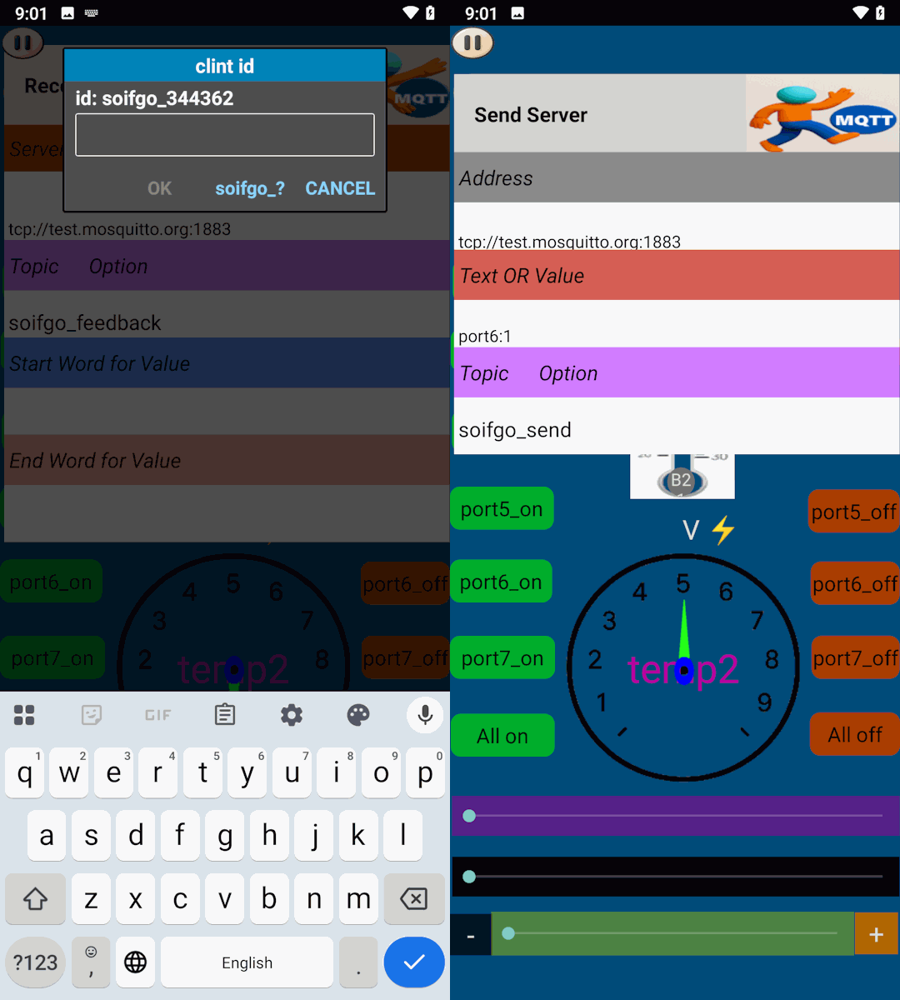

In this tutorial, you will learn how to configure the ESP8266 Wi-Fi module and establish a reliable connection with the SoifGo MQTT broker. We’ll cover the basics of MQTT, explain how publish/subscribe works, and guide you step by step to get your device online.
Use a USB to TTL converter. It can be a single USB-to-TTL board or a combination of USB-to-UART and UART-to-TTL.
You’ll need both 5V and 3.3V power sources. Recommended converter:

Install the required libraries and check the port and board settings:




#include <ESP8266WiFi.h>
#include <ESP8266WebServer.h>
#include <EEPROM.h>
#include <PubSubClient.h>
ESP8266WebServer server(80);
WiFiClient espClient;
PubSubClient client(espClient);
const char* mqtt_server = "test.mosquitto.org";
const int mqtt_port = 1883;
const char* mqtt_recv_topic = "soifgo_send";
String ssid = "";
String password = "";
unsigned long lastCheck = 0;
const unsigned long checkInterval = 15000;
int reconnectAttempts = 0;
const int maxReconnectAttempts = 4;
void handleRoot() {
String mac = WiFi.macAddress();
String html = "WiFi Setup
"
"MAC Address: " + mac + "
"
"";
server.send(200, "text/html", html);
}
void handleSave() {
ssid = server.arg("ssid");
password = server.arg("pass");
EEPROM.begin(512);
for (int i = 0; i < 512; i++) EEPROM.write(i, 0);
EEPROM.write(0, ssid.length());
for (int i = 0; i < ssid.length(); i++) EEPROM.write(i+1, ssid[i]);
EEPROM.write(100, password.length());
for (int i = 0; i < password.length(); i++) EEPROM.write(i+101, password[i]);
EEPROM.commit();
server.send(200, "text/html", "Saved! Restarting...");
delay(2000);
ESP.restart();
}
void connectWiFi() {
EEPROM.begin(512);
int ssidLen = EEPROM.read(0);
ssid = "";
for (int i = 0; i < ssidLen; i++) ssid += char(EEPROM.read(i+1));
int passLen = EEPROM.read(100);
password = "";
for (int i = 0; i < passLen; i++) password += char(EEPROM.read(i+101));
bool connected = false;
if (ssid.length() > 0) {
WiFi.begin(ssid.c_str(), password.c_str());
Serial.print("Connecting to saved WiFi: ");
Serial.println(ssid);
int retries = 0;
while (WiFi.status() != WL_CONNECTED && retries < 10) {
delay(500);
Serial.print(".");
retries++;
}
if (WiFi.status() == WL_CONNECTED) {
Serial.println("\nConnected!");
Serial.print("IP: ");
Serial.println(WiFi.localIP());
connected = true;
}
}
if (!connected) {
WiFi.softAP("ESP_Config", "12345678");
Serial.println("Started AP: ESP_Config, password: 12345678");
Serial.print("AP IP: ");
Serial.println(WiFi.softAPIP());
}
}
void mqttCallback(char* topic, byte* payload, unsigned int length) {
String message;
for (unsigned int i = 0; i < length; i++) {
message += (char)payload[i];
}
if (String(topic) == mqtt_recv_topic) {
Serial.println(message);
}
}
bool reconnectMQTT() {
if (!client.connected()) {
String clientId = "ESP8266Client-" + String(ESP.getChipId());
if (client.connect(clientId.c_str())) {
client.subscribe(mqtt_recv_topic);
Serial.println("MQTT connected");
reconnectAttempts = 0;
return true;
} else {
reconnectAttempts++;
Serial.println("MQTT reconnect failed");
return false;
}
}
return true;
}
void setup() {
Serial.begin(115200);
connectWiFi();
server.on("/", handleRoot);
server.on("/save", handleSave);
server.begin();
client.setServer(mqtt_server, mqtt_port);
client.setCallback(mqttCallback);
}
void loop() {
server.handleClient();
if (WiFi.status() == WL_CONNECTED) {
if (!client.connected()) {
reconnectMQTT();
}
client.loop();
}
if (millis() - lastCheck > checkInterval) {
lastCheck = millis();
if (WiFi.status() != WL_CONNECTED) {
Serial.println("WiFi lost → reconnecting...");
connectWiFi();
}
if (!client.connected()) {
if (!reconnectMQTT() && reconnectAttempts >= maxReconnectAttempts) {
Serial.println("Too many fails → Restarting...");
ESP.restart();
}
}
}
static String serialBuffer = "";
while (Serial.available()) {
char c = Serial.read();
if (c == '\n') {
serialBuffer.trim();
if (serialBuffer.length() > 0) {
int sepIndex = serialBuffer.indexOf(':');
if (sepIndex > 0) {
String topicPart = serialBuffer.substring(0, sepIndex);
String payloadPart = serialBuffer.substring(sepIndex + 1);
String fullTopic = "soifgo_" + topicPart;
client.publish(fullTopic.c_str(), payloadPart.c_str());
}
}
serialBuffer = "";
} else {
serialBuffer += c;
}
}
}
Download the program file:
📦 Download ESP8266_mqtt_Arduino.zipPaste the code into Arduino IDE. You can configure Wi-Fi settings before upload:
wifiName = "TPLINK";
wifiPass = "abcd1234";


Click Verify and then Upload in Arduino:





Restart the module. You should see output like:

In this step, you need to program your microcontroller. You have several options:
If you are not familiar with the Bascom language, don’t worry. Simply copy the provided Bascom Basic code and use an AI assistant to translate it into Arduino C++ or any other programming language you are comfortable with. This way, you can adapt the project to your preferred development environment.
⚠️ Important: Don’t forget to configure the oscillator fuse bits to use an external crystal. Without this setting, the microcontroller will not operate correctly.

Program your ATmega16 using a compatible programmer:
$regfile = "m16adef.dat"
$crystal = 11059200
Config Adc = Single , Prescaler = Auto , Reference = Avcc
Config Timer1 = Pwm , Pwm = 10 , Compare_a_pwm = Clear_up , Compare_b_pwm = Clear_up , Prescale = 1
Declare Sub Red
CONFIG PORTB=OUTPUT
Portb = 0
Config Portc.0 = Input 'in key 1
Ddrc.0 = 0 : Portc.0 = 1
Config Portc.1 = Input 'in key 2
Ddrc.1 = 0 : Portc.1 = 1
$baud = 115200
Enable Interrupts
Config Serialin = Buffered , Size = 41 , Bytematch = 13
Dim Text , Feedback As String * 40
Dim Text2 As String * 4
Dim Text3 As String * 5
Dim Temp1 As Word
Dim Temp2 As Word
Dim Volt,pwm1aa As Word
Dim Volt2 As Single
Dim Step1 As Byte
Dim T1 As Byte
dim t2 as bit
Dim Pb As Byte
config watchdog=2048
start watchdog
Readeeprom portb , 1
Waitms 1
Readeeprom pwm1aa , 3
Waitms 1
Open "comd.6:9600,8,n,1" For Output As #1
Print #1 , "soifgo"
pwm1a=pwm1aa
Main:
Waitms 400
Incr Step1
reset watchdog
If Step1 > 7 Then Step1 = 1
Select Case Step1
Case 1
Volt = Getadc(0)
Volt2 = Volt / 204.8
Print "volt:" ; Fusing(volt2 , "#.##")
Case 2
Temp1 = Getadc(1)
Print "temp1:" ; Temp1
Case 3
Temp2 = Getadc(2)
Print "temp2:" ; Temp2
Case 4
Pb.0 = Portb.7
Pb.1 = Portb.6
Pb.2 = Portb.5
Pb.3 = Portb.4
Pb.4 = Portb.3
Pb.5 = Portb.2
Pb.6 = Portb.1
Pb.7 = Portb.0
Print "portb:" ; Bin(pb)
Case 5
Print "pinc:" ; Pinc.0 ; Pinc.1
Case 6
Print "feedback:" ; Feedback
End Select
Goto Main
Serial0charmatch:
waitms 20
Input Text
if text <> "" then call Red
Return
Sub Red
Reset Watchdog
Text = Trim(text)
Text = Ltrim(text)
Dim Z As Byte
For Z = 1 To Len(text)
If Mid(text , Z , 1) = ":" Then
Mid(text , Z , 1) = "="
End If
Next
Feedback = Text
If Instr(text , "rang") > 0 Then
Disable Interrupts
Print #1 , Mid(text , 6 , 36)
Enable Interrupts
End If
If Instr(text , "pwm1a") > 0 Then
Text3 = Mid(text , 7 , 4)
Pwm1a = Val(text3)
Writeeeprom pwm1a , 3
End If
If Instr(text , "port") > 0 Then
Text2 = Mid(Text , 7 , 1)
Text = Mid(text , 5 , 1)
if text2="0" then t2=0
if text2="1" then t2=1
t1=val(text)
If T1 < 8 Then Portb.t1 = T2
If T1 = 9 Then
if t2=1 then
Portb = 255
End If
if t2=0 then
Portb = 0
end if
end if
Writeeeprom Portb , 1
End If
Text = ""
Text2 = ""
Text3 = ""
T1 = 222
T2 = 0
Clear Serialin
End Sub

If you need advanced configuration, don’t worry. Simply click on the Topic Options label to access additional settings. Here you can adjust your username, password, client ID, and the connection quality (QoS). This ensures that your ESP8266 communicates reliably with the SoifGo MQTT broker.
Choose the QoS level based on how important message delivery is for your project. Higher QoS means more reliability, but also more overhead and slower performance.


This video demonstrates how to install and set up the ESP8266 Wi-Fi module. The process is the same across different setups, but make sure to use the provided MQTT Arduino sketch file. Click the link below to download the sample project:
📦 Download ESP8266_mqtt_Arduino.zip 📥 Download ESP8266 Setup VideoIf you don’t already have your own project, you can start with the prepared SoifGo sample file.
1. Extract the file and copy it into the device memory.
2. (Optional) Rename the p1 folder before placing it inside the SoifGo directory.
3. You can also move the file directly into the desired page folder within the SoifGo memory.
This way, you’ll have a ready-to-use setup without needing to create a project from scratch.
📦 Download soifgo fileThe module will attempt to connect to your router using the SSID and password you have provided. If the connection is successful, the device will remain stable and ready to use.
If the connection to the router fails (for example, due to an incorrect SSID or password),
the module will automatically switch to Access Point mode.
In this mode, a network named ESP_Config will be created.
192.168.4.1On this page, you can enter a new SSID and password, and also view the MAC Address of the module. After saving the information, the module will attempt to reconnect to your router.
If you plan to commercialize or sell this module:
This prevents unauthorized access and ensures the security of your users.